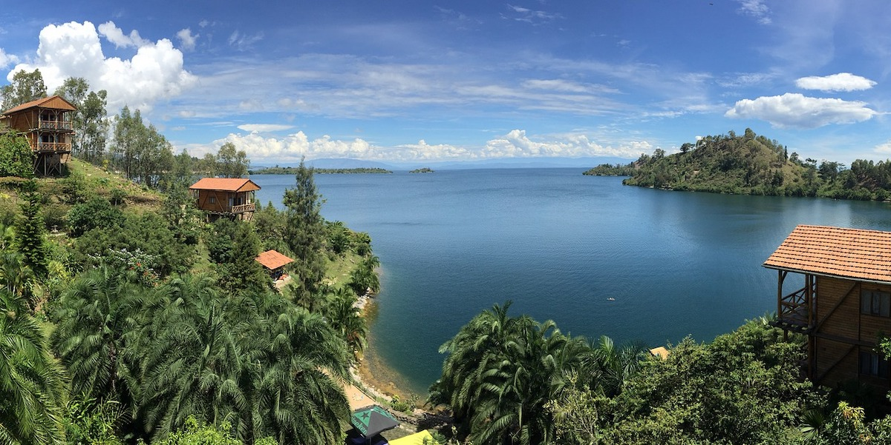

Burundi Commits to Strategic and Ambitious Climate Preparedness
Laury Iteka
May 19, 2025
Climate change is one of the major challenges to Burundi's socio-economic development, due to its known ability to impact economic growth. The Burundi National Development Plan 2018–2027 (PND 2018–2027) identifies managing the adverse effects of climate change as one of its top priorities in addressing the challenges the country faces: increased rainfall, shifting climate patterns, rising temperatures, and growing disaster risks—all of which hinder development efforts. The plan aims to "deepen the sustainable development approach by strengthening environmental governance and integrating green and blue economy perspectives into development policies."
The Green Climate Fund (GCF), created by the United Nations Framework Convention on Climate Change (UNFCCC) in December 2010 in Cancun, supports adaptation efforts in developing countries. It is an important tool for managing climate risks and improving living conditions. To better engage with the financial mechanisms offered by the GCF and maximize the benefits of available opportunities, the Government of Burundi requested support from the UNDP in developing a "Readiness and Preparatory Support" program.
The UNDP's support focuses on:
- Strengthening capacities for coordination and monitoring of climate change initiatives through the implementation of an intersectoral framework, solid tools, and a priority-driven program;
- Establishing sustainable mechanisms for engaging key stakeholders, including women and the private sector.
In line with efforts to enhance the country's capacity for dialogue and negotiations on climate financing, the UNDP, in collaboration with the Interministerial Committee on Climate Change, organized three workshops from February 27 to March 1 and from March 5 to 7 in Bujumbura. These workshops brought together representatives from sectoral ministries, the private sector, and civil society organizations (CSOs) working in the environmental and climate sectors.
The first two workshops, focused on raising awareness among stakeholders, included discussions on policies, funding, and the operational modalities of the GCF, as well as on climate change issues such as its manifestations, risks, and actions taken by the Government. These included assessing needs and prioritizing activities based on national and local priorities. The third workshop led to the drafting of Burundi's Climate Country Program, which is one of the Readiness Program indicators recognized by the GCF.
Participants expressed satisfaction with the new knowledge gained. "We received capacity-building in the field of climate change, and in particular, we learned how to develop projects to submit to the GCF to address the harmful effects of climate change," noted Nsabimana Paul, an official at the Ministry of Trade and Industry.